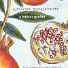

Celtic Lyrics Corner > Artists & Groups > Loreena McKennitt > A Winter Garden > Seeds Of Love
|  | Seeds Of Love |
| Credits : | Loreena McKennitt; traditional lyrics |
| Appears On : | A Winter Garden ; A Midwinter Night's Dream |
| Language : | English |
Lyrics :
I sowed the seeds of love
I sowed them in the spring
I gathered them up in the morning so clear
When the small birds so sweetly sing
When the small birds so sweetly sing
The gardener was standing by
I asked him to choose for me
He chose for me the violet, the lily and the pink
But those I refused all three
But those I refused all three
The violet I did not like
Because it bloomed so soon
The lily and the pink I really overthink
So I thought I would wait 'til June
So I thought I would wait 'til June
In June there was a red rose bud
That is the flower for me
I often times have plucked the red rose bud
'Til I gained the willow tree
'Til I gained the willow tree
The willow tree will twist
The willow tree will twine
I often times have wished I was in the young man's arms
Who once had the heart of mine
Who once had the heart of mine
I sowed the seeds of love
I sowed them in the spring
I gathered them up in the morning so soon
When the small birds so sweetly sing
When the small birds so sweetly sing